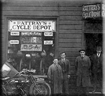
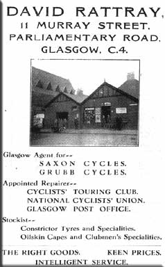
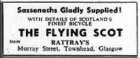
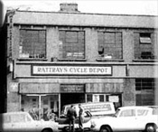
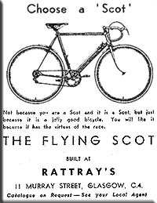

|
|||||||||
| A brief history of David Rattray & Co. Ltd. | |||||||||
Over a period of eighty-three years, their cycle shop would grow to become a focal point and meeting place for many cycle enthusiasts from Scotland and afar, the Scot name representing what was thought to be the best in hand built lightweight racing and touring machines. Their reputation became so widespread that at one time most cyclists in Scotland, owned raced or actively sought one. From the small shop in McAslin Street, David Rattray progressed from cycle hire, to sales and servicing, and in 1913 moved to larger premises in adjacent Murray Street. In common with most shops of the time, they became agents for a number of established lightweight brands, for example Saxon, Grubb and Selbach and in later years for the larger manufacturers like Sunbeam, Dawes and Raleigh. David Rattray was closely involved with the thriving road racing scene in particular in the West of Scotland, and had contact with many successful or aspiring "speedmen". When it came to sourcing bicycles for competition however, the absence of any substantial indigenous lightweight cycle industry in Scotland meant a limited choice of marques, from those produced across the border with virtually no input from the Scottish riders using these machines. By the mid 1920s a few Scottish builders began to produce frames, designed to meet local riders specifications and requirements. Though a few were quite successful, these were generally one or two-man shops with limited production. In 1928 David Rattray with Jack Smith, by then his partner in the company, began to manufacture their own lightweight frames, mainly built to order for members of the local cycling clubs. In 1935, production began in earnest and they started selling the machines as "The Scot". The first of approximately 15,000 complete bicycles and frames that were to be handbuilt by the company until it's closure in 1983. Through the mid to late 1930s Scot frames steadily became the machine of choice for local clubmen. By the end of the decade they had carved themselves a niche in the lightweight market. War in Europe intervened however, and the commencement of
hostilities in 1939, saw many cycle shops forced to close down and
manufacturers throughout the country, obliged to support the war effort
by transferring production to essential war work. The high quality
steel and steel tubing, necessary for the construction of lightweight
frames, steadily became all but unobtainable. Reynolds, the main tubing
supplier, became almost entirely focused on producing aircraft parts
including for use in the construction of Supermarine Spitfires. The
other British tubing manufacturer, Accles & Pollock. (A&P) were
similarly affected. Some of their own staff were retrained, and additional staff
taken on at Murray Street, were trained up as machinists/turners, new
machinery being bought to cope with a rather different sort of work
than the company had hitherto been used. The purchase and opening around this time of a shop at 254
High Street (formerly Malcolm Smith's) gave another outlet on one of
Glasgow's busiest streets. This was not the first time Rattrays had a
"branch" shop, having previously had another shop at 212 Parliamentary
Road, though they never achieved the popularity and success of Murray
Street and latterly Alexandra Parade, being substantially smaller. The
main shop could not have been better placed, being just around the
corner from the clubrooms of the Cyclists' Touring Club (C.T.C.)
Glasgow District Association at 379 Parliamentary Road. With modernised premises, production at it's peak, employing at least five framebuilders plus assistants to cope with the work on an expanding order book the company must have been in good shape. Sadly however David Rattray passed away in 1950 at the age of 72, leaving the company to be run by his friend and partner Jack Smith, with his wife Lottie as his business partner. David Rattray's sister Agnes, was to pass away exactly one year on to the day that her brother had died. The company was always led from the front by Jack Smith, who with his salesmen appear to have known exactly what the customers wanted. He developed the business to the point where in Scotland purchasing a "serious" bicycle meant only a Scot would do, and the choice was really just what colour and finish, and what you could afford. Business wasn't only restricted to the home market, a steady stream of native and ex-pat customers ordered Scot's to take home, in particular to Canada, the USA and Australia. Rattray's also became a fully fledged wholesaler selling the Scot frames to other Cycle shops around Scotland and the North of England. In the early 1950s areas all over Glasgow and particularly the city centre were selected and planned for what was euphemistically called "redevelopment". The Townhead district was one of the last areas to be started and unfortunately Murray Street was located right in the middle, In 1968 the company was served with a compulsory purchase order on the premises. The need to move from Murray Street was unavoidable, and came on the back of a lean period, when the car had become the means for folk to get away at the weekend. The effect on the company and its finances was devastating. For a short period the company traded from an old factory and shop at 86/88 Dalhousie St, in Glasgow, itself later the subject of a compulsory purchase order. The company leased smaller and less suitable premises at 261 Alexandra Parade, at which they remained until closure. Fortunately for Rattrays the loyal customers they had built up over the years and the quality of their products ensured that they would be followed wherever they ended up in Glasgow. Sadly though the company was dealt a further blow when on 15 February 1973, Jack Smith died aged 69. It was a sad loss for the family and to the trade but also to the community. Over 300 people attended the funeral at Glasgow Crematorium (Maryhill) on the 20th of February, including representatives from the cycling clubs and from the trade, notably Brown Brothers, Dunlop, The North British Machine Co., Raleigh, Reynolds Tubes, Honda, Glasgow Corporation, Glasgow City Police, Glasgow Rangers Football Club, the Daily Record newspaper and Cadder Freemasons. Clearly it was going to be a hard act to follow, and from Jack's death the company was run by his son John, with his mother remaining as partner. They did not, however appear to recover from the loss of Jack and the company fortunes began to decline. This was not helped by a general downturn in the sports cycle market, and in particular the demand for lightweight specials. This also despite Steyr-Daimler-Puch (GB) Ltd. taking a 49% share in the company as part of their efforts to gain a foothold in the British cycling market. Even the diversification into selling Honda motorcycles some years previously hadn't halted the decline in the company fortunes. The final years at Alexandra Parade and the company's eventual demise have become somewhat shrouded in the mists of time. However, what is known of the last days tells a sad story about the end of what had once been Scotland's premier bike manufacturer. As far back as the late 1970's, Rattrays was finding it increasingly difficult to make ends meet. Against that background, even a well-run business would have struggled and, whatever the strengths of Rattrays, efficiency and good business practice were not words that could have been readily applied to the Glasgow firm as it faltered. Puch agreed to take over the company debts in exchange for the majority Rattrays shareholding of John Smith, ending the family involvement that had started more than sixty years earlier. In 1981, at a cycle trade show in Harrogate, Evan Ritchie was approached by a senior figure at Puch (GB) Ltd, Peter Bolton, who said that they were keen to off-load Rattrays. Mr. Ritchie agreed to take over the business and the lease of the Alexandra Parade premises. "It was a very large premises, a 2000 sq. ft. shop, big workshops, machine shops, huge stores etc., It used to be an RAF fighter command headquarters and command centre for Scotland during WW2 in the RAF's fight against the Luftwaffe and was built like an air raid shelter, which to a certain extent it was," said Mr. Ritchie. "Apart from retail stock there were included quite a few boxes of Reynolds 531 tubing, forks, dropouts, handlebars, wheels, tyres etc., plus the basic machinery for making frames. The place was very poorly managed with rubbish lying about. Some of the anxious staff, envisaging no future in Rattrays, lacked discipline and felt neither pride nor motivation to do their best work. Puch were paying their wages from Nottingham and the supervision from there was claimed by some to be negligible. They (Puch) wanted to get rid of their big Glasgow headache. I therefore stated my own terms." Mr. Ritchie's company, Barbour's Garages Ltd, inherited the Flying Scot and The Scot names and the company was, according to Mr. Ritchie, "Perking up, front shop and workshops cleaned and refurbished, redecorated, extended, orders coming in, sales going up, the staff happy and remotivated and all involved seeing the light at the end of the tunnel." The company was again "beginning to make money" when he ran it. During his ownership, the frame numbering sequence was changed to incorporate his initials (and the Queens!). "I still have ER2 here in Fraserburgh which is a beautiful machine in perfect working order and a pride and joy of mine," he said. "I was involved personally in the making of it and others, helping with sandblasting, spray painting, assembling, putting on the stickers etc." However, Mr. Ritchie and the accountant (Mr. A. J. Birnie CA) for Barbour's Garages, who was also a significant shareholder in Barbour's, were involved in a business dispute and Rattrays was eventually sold to the accountant for a 1p cheque as part his settlement for his shares in the garage firm. Rattray's fortunes didn't improve, and on the 5th of April 1983 Steyr-Daimler-Puch started the process of compulsory liquidation and consequently the staff were made redundant and
Rattray's lease, the assets, including the machinery and tubing, were
all sold off, with the Scot and Flying Scot names being sold to Jim
Houston, owner of Glasgow bike retailer, Dale's Cycles. Jim created a division of his own company to handle the process (Flying Scot Cycles Ltd) and during the last weeknds of 1983 held a public sale of what remained. In 1983, Rattray's closed Alexandra Parade for good without a ripple of remorse from anyone. Finally In late 1985 the company David Rattray (Cycles) Ltd. was officially in liqidation. Over the years, thousands of frames and complete bicycles were produced at Murray Street, and latterly at Alexandra Parade, Glasgow. All were built to the same high standard from club machine to tourer to top-flight racer. Each frame hand built with the same care and attention the like of which modern technology cannot replicate. Today, more than 22 years later, nothing remains of either Murray Street, or the once busy and thriving Parliamentary Road, the streets and the original premises having all but disappeared, flattened and replaced with modern low & hi-rise housing. Similarly all that remains of the Alexandra Parade premises is the land on which they stood, and the ubiquitous small "factory units". It's not the end of the story though. Perhaps initially trading on the "Scot" name and reputation to some extent, Jim Houston restarted limited production using the frame builder, Dave Yates, at M.Steel Cycles. These however are entirely 'custom' built and are produced to order and at present only "on request" howvever Jim's company "Flying Scot Cycles Ltd." was dissolved on the 12th of July 1991. Despite their widespread popularity Flying Scots are disappearing fast from the cycling scene, though many still exist. Three remain on show to the public in Glasgow, at the Museum of Transport at Kelvingrove. Of these, the 1950 mixte framed cycle belongs to Lottie Smith, Jack's wife, and is on permanent loan to the museum. |
|||||||||
'The Flying Scot' website Copyright © 2011 Bob Reid - Last Updated 4 August, 2011 8:22hrs |
|||||||||